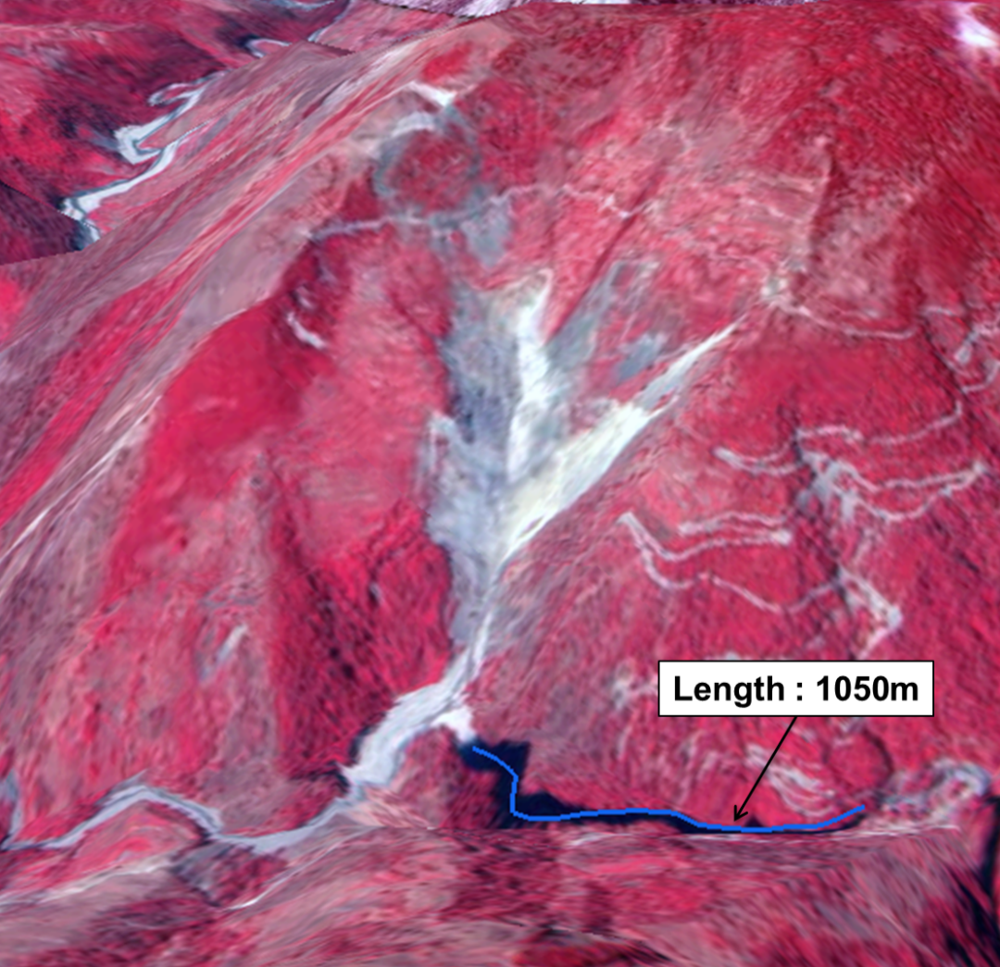
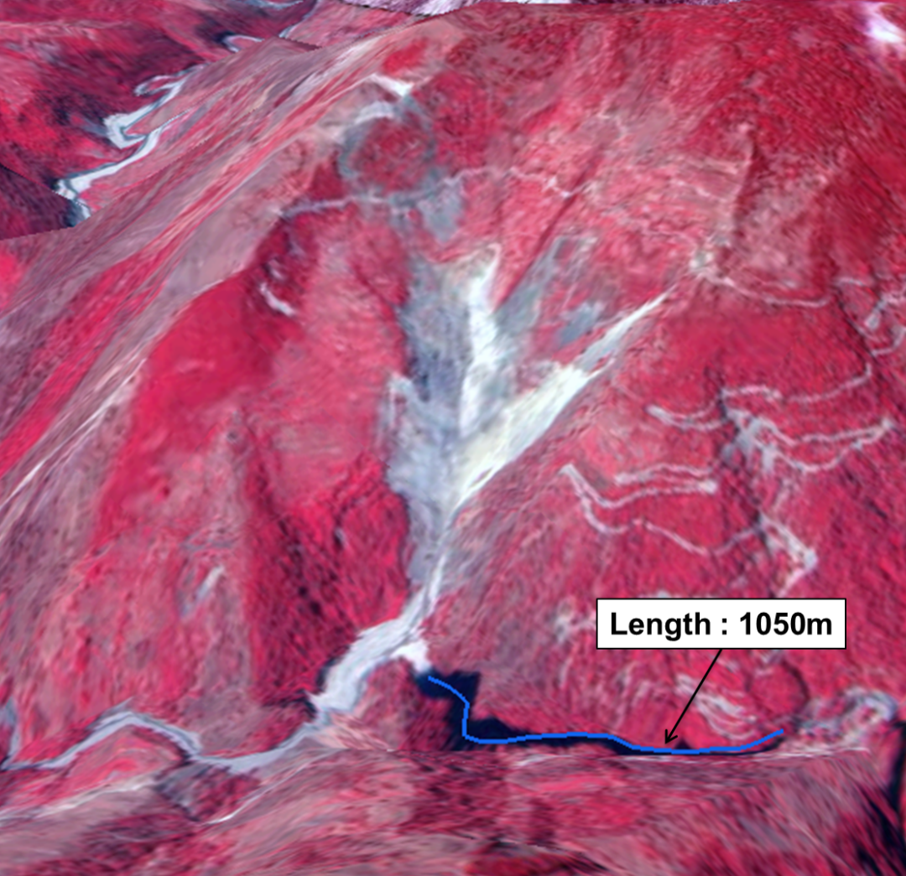

In Brief
- The Kunwari landslide is situated on the right bank of the Baura Gad, a tributary of Pindar River in Bagehswar District
- This barrier lake has been observed to intermittently form and drain since 2014
- In 2022, the landslide reactivated again along a pre-existing slope break, a zone of inherent weakness, blocking a tributary of the Pindar River in April and June
- A landslide-dammed lake was discovered on November 14, 2024 which poses a significant risk to Kunwari village
The Kunwari landslide (30.08° N, 79.81° E) is situated on the right bank of the Baura Gad, a tributary of the Pindar River, in Kapkot Tehsil, Bageshwar district, Uttarakhand. This landslide is situated in the seismically active Himalayan region, demonstrates a recurring pattern of periodic reactivation.The Kunwari landslides have a history of major events, including a significant landslide in June 2013 that blocked the Baura Gad. Subsequent reactivation events in June 2014, November 2016, and April 2017 similarly obstructed the tributary, resulting in the formation of landslide-debris-dammed lakes. In 2022, the landslide reactivated again, blocking a tributary of the Pindar River in April and June. According to a news report published on November 14, 2024, by The Times of India, a landslide-dammed lake was discovered near Kunwari village. This barrier lake has been observed to intermittently form and drain since 2014. This recurring blockage poses a significant risk to the Kunwari village. The dammed lake continues to grow, with current dimensions estimated at 850 m in length and 60 m in width. The increasing lake volume raises concerns of a potential lake outburst due to seismic activeness of the region. A sudden breach could release a massive volume of water, potentially causing significant damage downstream.
The Kunwari Landslide is driven by a confluence of geological and environmental factors. The terrain's susceptibility to instability is heightened by the presence of weak materials, steep slopes influenced by the proximity to the MCT4 and other faults, and a history of tectonic activity. Furthermore, the region experiences high precipitation, exacerbating slope instability. Anthropogenic disturbances, such as deforestation and infrastructure development, further compound these risks by disrupting the natural stability of the slope.